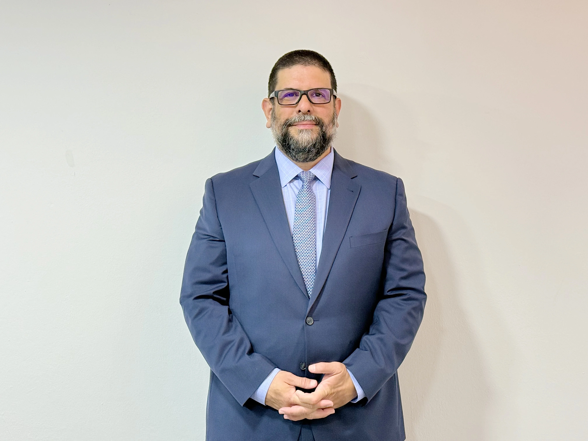

Eduardo Arias Rank
Socio
Eduardo Arias Rank es socio fundador de Arias Rank & Asociados y uno de los referentes más reconocidos en derecho empresarial en El Salvador. Con más de veinticinco años de experiencia asesorando a compañías nacionales y transnacionales, ha construido una trayectoria marcada por la participación en casos de alta complejidad y relevancia jurídica, posicionándose como un estratega legal capaz de generar soluciones sólidas, prácticas y orientadas a resultados.
Su práctica profesional se centra en derecho corporativo, derecho de competencia, derecho laboral y de consumo, áreas en las que ha liderado procesos decisivos para empresas líderes en sectores industriales, comerciales y de servicios. Su enfoque combina una visión jurídica profunda con criterio empresarial, lo que le permite anticipar riesgos, diseñar estrategias de protección y acompañar a organizaciones en momentos críticos como fusiones, contrataciones estratégicas, controversias empresariales y manejo de crisis.
Además de su labor como abogado, funge como director en diversas empresas e instituciones, aportando una perspectiva integral que une gobernanza corporativa, estrategia de negocios y cumplimiento normativo. Esta experiencia le permite comprender de primera mano las dinámicas internas de las organizaciones y asesorar con un enfoque práctico, realista y alineado a los objetivos del negocio.
Eduardo cuenta con formación académica de alto nivel, incluyendo el grado de Doctor en Derecho Privado y un Máster en Derecho de los Negocios del programa conjunto de la Universidad Dr. José Matías Delgado y la Universidad Autónoma de Barcelona. Su preparación, sumada a su trayectoria profesional, respalda su capacidad para liderar asuntos jurídicos complejos y acompañar a empresas en entornos altamente competitivos.
Hoy, su liderazgo en Arias Rank & Asociados se distingue por una asesoría estratégica que combina rigor técnico, visión empresarial y ejecución efectiva, convirtiéndolo en un aliado clave para organizaciones que buscan seguridad jurídica, crecimiento y competitividad.